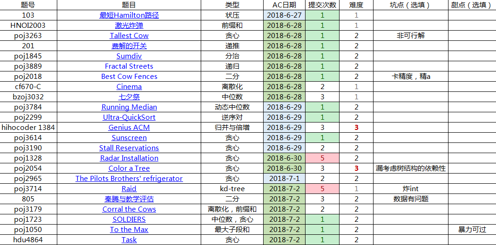

本处难度分档以个人实力为参照系
难度1：半小时内想出，半小时内ac
难度2：半小时想不出，看题解，服气
难度3：半小时想不出，看题解，ac后依然觉得难度很大

0x00 基本算法
1 0103 最短Hamilton路径
6.27 难度1
没难度，虽然一开始灰常尴尬地没注意到终点必须是n-1
2 费解的开关
6.28 难度2
关键性质：
如果从某个格子的状态考虑，它的状态取决于它被覆盖了多少次的奇偶性1而与次序无关！
所以说先点还是后点没有意义，只需要知道要点哪里就是了；同理，重复点也是没有用的。
那么第一行的点击方式就确定下来了，接下来一行行消除
然后为了把第一行的1消除，只能按第二行的对应点，以此类推
3 [HNOI2003]激光炸弹
6.28 难度1
见这里激光炸弹
POJ3263 Tallest Cow
6.28 难度2
开始想着查分约束，但是很慢而且没法确保最高点定值，建图也很麻烦
实在没有思路看了发题解
感觉这种贪心的方式很恶心，而且题意实在太不清晰了（理解分析能力？）
其实就是，假设所有人都是最高点
然后因为相互看到必须中间都小于，所以不会交叉（括号序列）
所以可以统计被覆盖次数，由于小于的传递性，这个削弱次数直接取-1
然后必须要去重，否则无意义削弱
4 POJ1845 Sumdiv
6.28 难度2
以前的原题
这里
5 POJ3889 Fractal Streets
6.28 难度2
看到这个分形图就有点慌
主要难点就是怎么把编号换成坐标，而且这个编号还是连续的
然后随便写了几个，找不到规律
膜了膜题解
其实，正是因为这是分形，可以递归求解
这个旋转，其实是可以对坐标操作一下的，具体自己推+找规律
然后其实它总是从左上到右上到右下到左下的
所以可以直接按照编号的大小确定属于哪个区域
6 POJ2018 Best Cow Fences
6.28 难度2
首先用二分，判定是否有满足条件的一段，平均值>=mid
然后最精妙的地方就是所有数-mid
这样就从「与长度有关的平均值」变成了「与长度无关的和」
直观点就是，如今
$$
sum=s[i]-s[j],0 \le j \le i-L
$$
如果sum>=0，那么就满足条件
显然在s[j]最小时最优，二每新计算一个i，都带来一个新的j
所以记录前面的最小值就好了
至于卡精度这种事……
精A罢
7 cf670-C Cinema
6.28 难度1
离散化裸题
居然是c题
8 bzoj3032 七夕祭
6.28 难度1
中位数
这个东西前面已经讲过了，具体请搜索“中位数”
典型特征就是能左能右或者类似的相反方向
把所有a-=平均数，这个操作还是掌握了点的
看起来a[1]直接=0，其实这是因为总体和=0，没有直接用，这个问题和akc研究了挺久
然后由于等差数列，可能爆int
9 POJ3784 Running Median
6.29 难度1
原来，1.5亿是能跑的……
这个对顶堆的做法也是蛮有意思的，稍微比树状数组少log，比splay少常数
第k大数
这方法挺有意思的
应该就是eth_element的原理吧
就是无序数列中，O(2n)找
其实就是n+n/2+n/4+…….1<=2n
原理就是类似二分排序，但是没必要两边都进入，而是只进入其中一边
蛮好理解的
10 POJ2299 Ultra-QuickSort
6.29 难度2
原来相邻比较和交换就是冒泡排序呀
那么每次交换的时候，都消除了一个逆序对
答案就是其个数了
练习一下归并
11 hihocoder 1384 Genius ACM
6.29 难度3
类似于满足二分性，不过用倍增会更快，特别是当k小的时候
然后直接暴力地排序会tle，可以用归并来合并
a数组=原本值
b数组=排好序值
c数组=合并后，用于尝试，成功则copy回b数组
12 POJ3614 Sunscreen
6.29 难度2
不愧是我最虚的贪心
把牛用mx[x]递增排序，每次选最小的
归纳法证明：
对于a=sp[t1]，b=sp[t2]
已知mi[x]<=a<b<=mx[x]<=mx[y]
则对于y，可能「ab可」、「a不可b可」、「ab不可」
任何一种，选a 不会更差
同理，把mi[x]递减排序，每次选最大的也行
13 POJ3190 Stall Reservations
6.29 难度2
先按照开始时间把牛排序
然后如果以房间为导向，二分查找可行牛，就要解决删除的问题，然后就懵了
（其实这个也是错的）
如果以牛为导向去安排，随便放进一个能放的房间就行了
证明：
假如有两个房间a和b，ed[a]<ed[b]
由于后面的开始时间会更后，所以选择a，不会更优
不过这样是平方级别的
既然是随便就好，搞个小根堆，这样选择的开销就很小了
回顾一下，关键还是以开始时间排序这个操作，并且要按照这个来安排而不是作为有序数列来二分查找
14 POJ1328 Radar Installation
6.30 难度2
计算出能覆盖每个岛的圆的圆点区间，用最少的点覆盖每个区间
把区间按照左端点排序，然后如果无重叠，重新开始，否则可以把覆盖点“挪”到重叠区域
不过思考的时候漏了一种情况：就是重叠的话可能是包含关系
对于那些重叠但是不包含的，可能在后面还会和别人重叠
但同样是因为贡献只有1，所以选择前面 不会更差
15 国王游戏
6.30 难度2
原题
16 POJ2054 Color a Tree
6.30 难度3
先给出一个贪心：每次在能染色的点中找最大的
然鹅这是错误的，举个简单的反例：在一个极小节点下有一个极大节点
反思一下，这是因为「必须先染父亲才能染儿子」这个条件
但是我们依然可以推出一个结论：「对于非根的最大点，必定在父亲染完后立刻染色」
所以说，其实可以把那两个节点看作一个节点
不过这个节点的权值是多少才能不影响接下来的判断呢？
结论2：「合并后的节点，权值为其平均值」
证明：
网上的证明普遍不堪入目，书上的也半斤八两
后来终于在POJ的远古评论里看到，简单得令人感动
设有权值a节点和b1~bn的合并节点
如果a在前，优势是na
如果a在后，优势是b1~bn的和
那么按照结论一的步骤，我们每次都要比较权值大小
则比较：「公共部分+na」与「公共部分+b1~bn的和」
由于我们不能把所有的a改成na，考虑算出一个通用的权值
则比较：「a」与「b1~bn的和/n」
也就是平均数了
另外，如果感性地理解，其实就是把「晚一点染色的影响」均摊了
总之，合并后，它和一个普通的点是没有区别的，可以继续合并
合并时，还要用指针存储顺序，最后按照决策计算答案即可
然后有一点是忘记了：
最大点不一定是叶子节点（脑海中喜欢这样想，人性的懒惰？）
所以要把fa改掉
然后我不会nlogn怎么写……可删堆怕是用不了的
0x08「基本算法」练习
17 POJ2965 The Pilots Brothers’ refrigerator
7.1 难度2
4乘4的矩阵，每个格子一个开关，+关-开
每次操作改变第i行和第j列
求所有开的最小操作数，并输出具体操作
又忘记这类问题的顺序无关性了……
不过复杂度上bfs是可以的
18 POJ3714 Raid
7.2 难度2
kd-tree裸题
好久没打了，练练手，果然炸……
19 bzoj1271 luogu4403 秦腾与教学评估
7.2 难度2
真的没想到这个「具体位置个数」居然可以转化为「点个数前缀和的奇偶性」上来
所以就可以二分了
然后就是在bzoj和luogu上的官方数据，疑似总人数爆int，没有满足题意
20 POJ3179 Corral the Cows
7.2 难度2
同样是无法存储的大坐标
这一次的操作是离散化，因为没想到这个，就把前缀和否定掉了……
然后就是常规的但其实我不熟练的双点法，虽然昨晚打比赛还用过咧
21 POJ1723 SOLDIERS
7.2 难度2
一道很好地融合了贪心的题目
至少好过七夕祭这种强行二维题
y直接中位数是没有问题的了
主要是有个贪心没有想到：
为了解决起点不确定问题，直接设一个起点
然后把原数组贪心后a[i]对应st+i-1，并且是一一对应
否则造成没有意义的花费
这样达到最优解
22 POJ1050 To the Max
7.2 难度2
裸题，枚举l、r，就能顺利转化了（又是想不到）
可能因为是远古题吧
而且如今这个数据规模暴力是很快过去的，没常数嘛，改成n=300就好很多
23 HDU4864 Task
7.2 难度2
兼顾策略和实现的贪心好题
观察题目，发现重要性质
- 价值中，时间的优先级绝对大于等级
- 价值只和任务有关，和具体机器无关
结论
- 优先考虑时间
- 应该用任务去找机器
具体而言
- 把任务和机器按照时间从小到大排序，从大到小枚举任务（经典套路之尽量从小范围开始）
- 对于每个任务，可以确定一个区间满足时间的条件,区间左端点单调递减
- 由于性质2，这样我们就顺利地 消除了时间、等级对决策的直接影响
- 由于比现在耗时更大的任务已经解决，则选择时间最大的机器 不会使结果更差
- 至于机器的等级，直接使用满足条件但等级最小的，反正和价值无关，减少浪费
- 找的时候，两种方法，一是维护一个set这样不用打splay，二是统计某个等级的出现数量，因为等级比较少（之所以能这样又是用了性质2）
综上所述，时间复杂度约O(nlogn)
对于结论2，可以再补充一个理由：如果用机器找任务，就不能消除时间对决策的直接影响
就是说，当我们确定一个区间时，有两个参考量，毕竟会影响价值
而我们现在就只用考虑等级，所以才能直接决定